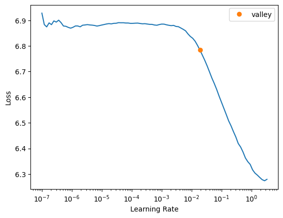
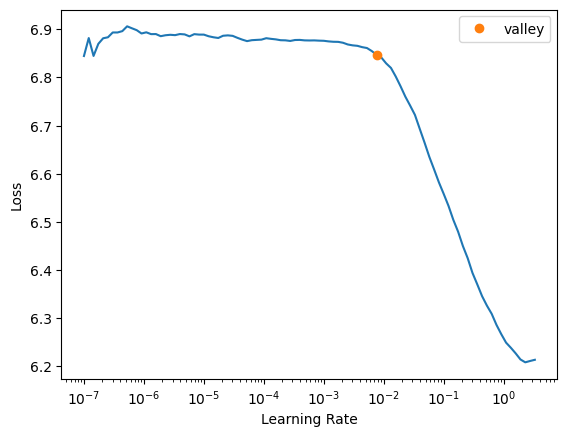
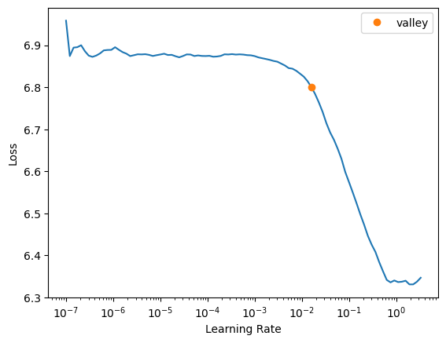
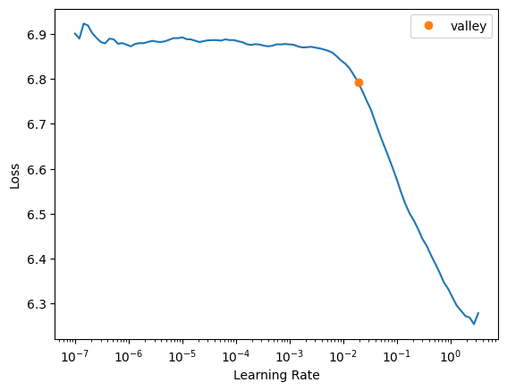
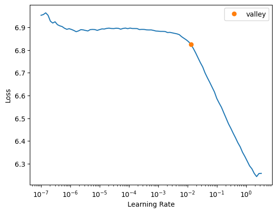

def accuracy(inp, targ, axis=-1):
pred,targ = flatten_check(inp.argmax(dim=axis), targ)
return (pred == targ).float().mean()Baseline implementations
This notebook introduces a few loss and metric functions. Afterwards, eight models based on four papers are re-implemented in
pytorch. For each model, aPPModelis created.
Loss and Metrics
This section defines some metrics and loss functions. Apart from that, we use the standart loss functions and metrics from fastai and pytorch, namely accuracy, mae, and cross_entropy
maeDurDaysNormalize
maeDurDaysNormalize (p, yb, mean=0, std=0, unit=86400)
Decodes time and converts from seconds to days Returns mae
maeDurDaysMinMax
maeDurDaysMinMax (p, yb, minn=0, maxx=0, unit=86400)
Decodes time and converts from seconds to days Returns mae
AvgMetric
AvgMetric (func, name)
Average the values of func taking into account potential different batch sizes
get_metrics
get_metrics (o, date_col='timestamp_Relative_elapsed')
A utility function that automatically selects the correct metric functions based on the PPObj o
multi_loss_sum
multi_loss_sum (o, p, y)
Multi Loss function that sums up multiple loss functions. The selection of the loss function is based on the PPObj o
Camargo
Input: activity, resource, duration
Output: activity, resource, duration
Loss: sum(cross_entropy(activity),cross_entropy(resource),mae(duration))
path= '../data/logs/csv/mppn_ds/Helpdesk.csv'log=import_log(path)
o=PPObj(log,[Categorify,Datetify,Normalize()],date_names=['timestamp'],cat_names=['activity','resource'],
y_names=['activity','resource','timestamp_Relative_elapsed'],splits=split_traces(log))
o
dls=o.get_dls()xcat,xcont,y=dls.one_batch()xcat.shape,xcont.shape,len(y)(torch.Size([64, 2, 5]), torch.Size([64, 1, 5]), 3)Spezialized
Camargo_specialized
Camargo_specialized (o)
Base class for all neural network modules.
Your models should also subclass this class.
Modules can also contain other Modules, allowing to nest them in a tree structure. You can assign the submodules as regular attributes::
import torch.nn as nn
import torch.nn.functional as F
class Model(nn.Module):
def __init__(self):
super().__init__()
self.conv1 = nn.Conv2d(1, 20, 5)
self.conv2 = nn.Conv2d(20, 20, 5)
def forward(self, x):
x = F.relu(self.conv1(x))
return F.relu(self.conv2(x))Submodules assigned in this way will be registered, and will have their parameters converted too when you call :meth:to, etc.
.. note:: As per the example above, an __init__() call to the parent class must be made before assignment on the child.
:ivar training: Boolean represents whether this module is in training or evaluation mode. :vartype training: bool
m=Camargo_specialized(o)p=m(xcat.cpu(),xcont.cpu())loss=partial(multi_loss_sum,o)accuracy??loss(p,tuple(i.cpu()for i in y))TensorBase(6.8803, grad_fn=<AliasBackward>)if _RUN_TRAINING:
metrics=get_metrics(o)
train_validate(dls,m,loss=loss,metrics=metrics,epoch=1,print_output=True,show_plot=False)| epoch | train_loss | valid_loss | acc_activity | acc_resource | mae_days | time |
|---|---|---|---|---|---|---|
| 0 | 5.087773 | 5.077742 | 0.845785 | 0.501916 | 5.414929 | 00:06 |
Better model found at epoch 0 with valid_loss value: 5.077742099761963.
Better model found at epoch 0 with valid_loss value: 0.8500967025756836.
CPU times: user 14.4 s, sys: 4.45 s, total: 18.9 s
Wall time: 19.6 sConcat
Camargo_concat
Camargo_concat (o)
Base class for all neural network modules.
Your models should also subclass this class.
Modules can also contain other Modules, allowing to nest them in a tree structure. You can assign the submodules as regular attributes::
import torch.nn as nn
import torch.nn.functional as F
class Model(nn.Module):
def __init__(self):
super().__init__()
self.conv1 = nn.Conv2d(1, 20, 5)
self.conv2 = nn.Conv2d(20, 20, 5)
def forward(self, x):
x = F.relu(self.conv1(x))
return F.relu(self.conv2(x))Submodules assigned in this way will be registered, and will have their parameters converted too when you call :meth:to, etc.
.. note:: As per the example above, an __init__() call to the parent class must be made before assignment on the child.
:ivar training: Boolean represents whether this module is in training or evaluation mode. :vartype training: bool
if _RUN_TRAINING:
log=import_log(path)
o=PPObj(log,[Categorify,Datetify,Normalize()],date_names=['timestamp'],cat_names=['activity','resource'],
y_names=['activity','resource','timestamp_Relative_elapsed'],splits=split_traces(log),)
dls=o.get_dls()
m=Camargo_concat(o)
loss=0
loss=partial(multi_loss_sum,o)
train_validate(dls,m,loss=loss,metrics=get_metrics(o),epoch=1,print_output=True,show_plot=False,output_index=[1,2,3])| epoch | train_loss | valid_loss | acc_activity | acc_resource | mae_days | time |
|---|---|---|---|---|---|---|
| 0 | 5.043581 | 5.004405 | 0.862868 | 0.521487 | 5.494439 | 00:06 |
Better model found at epoch 0 with valid_loss value: 5.0044050216674805.
Better model found at epoch 0 with valid_loss value: 0.8609335422515869.
CPU times: user 13.6 s, sys: 4.56 s, total: 18.1 s
Wall time: 18.7 sFull_Concat
Camargo_fullconcat
Camargo_fullconcat (o)
Base class for all neural network modules.
Your models should also subclass this class.
Modules can also contain other Modules, allowing to nest them in a tree structure. You can assign the submodules as regular attributes::
import torch.nn as nn
import torch.nn.functional as F
class Model(nn.Module):
def __init__(self):
super().__init__()
self.conv1 = nn.Conv2d(1, 20, 5)
self.conv2 = nn.Conv2d(20, 20, 5)
def forward(self, x):
x = F.relu(self.conv1(x))
return F.relu(self.conv2(x))Submodules assigned in this way will be registered, and will have their parameters converted too when you call :meth:to, etc.
.. note:: As per the example above, an __init__() call to the parent class must be made before assignment on the child.
:ivar training: Boolean represents whether this module is in training or evaluation mode. :vartype training: bool
if _RUN_TRAINING:
log=import_log(path)
o=PPObj(log,[Categorify,Datetify,Normalize],date_names=['timestamp'],cat_names=['activity','resource'],
y_names=['activity','resource','timestamp_Relative_elapsed'],splits=split_traces(log),)
dls=o.get_dls()
m=Camargo_fullconcat(o)
loss=0
loss=partial(multi_loss_sum,o)
train_validate(dls,m,loss=loss,metrics=get_metrics(o),epoch=1,print_output=True,output_index=[1,2,3])| epoch | train_loss | valid_loss | acc_activity | acc_resource | mae_days | time |
|---|---|---|---|---|---|---|
| 0 | 4.997516 | 4.959108 | 0.854572 | 0.517996 | 3.629107 | 00:05 |
Better model found at epoch 0 with valid_loss value: 4.959108352661133.
Better model found at epoch 0 with valid_loss value: 0.8306697010993958.
CPU times: user 12.6 s, sys: 4.56 s, total: 17.1 s
Wall time: 17.6 s




PPMS
PPM_Camargo_Spezialized
PPM_Camargo_Spezialized (log, ds_name, splits, store=None, bs=64, print_output=False, patience=3, min_delta=0.005, attr_dict=None, windows=<function windows_fast>, epoch=20, sample=False, train_validate=<function train_validate>)
Initialize self. See help(type(self)) for accurate signature.
PPM_Camargo_fullconcat
PPM_Camargo_fullconcat (log, ds_name, splits, store=None, bs=64, print_output=False, patience=3, min_delta=0.005, attr_dict=None, windows=<function windows_fast>, epoch=20, sample=False, train_validate=<function train_validate>)
Initialize self. See help(type(self)) for accurate signature.
PPM_Camargo_concat
PPM_Camargo_concat (log, ds_name, splits, store=None, bs=64, print_output=False, patience=3, min_delta=0.005, attr_dict=None, windows=<function windows_fast>, epoch=20, sample=False, train_validate=<function train_validate>)
Initialize self. See help(type(self)) for accurate signature.
if _RUN_TRAINING:
log=import_log(path)
ppm=PPM_Camargo_fullconcat(log,get_ds_name(path),print_output=True,epoch=1,bs=512,
splits=split_traces(log))
ppm.evaluate()Helpdesk Camargo_fullconcat
Next event prediction training
Better model found at epoch 0 with valid_loss value: 5.782820701599121.
Better model found at epoch 0 with valid_loss value: 0.37526652216911316.
Last event prediction training
Better model found at epoch 0 with valid_loss value: 4.761327743530273.
Better model found at epoch 0 with valid_loss value: 1.0.
next_step_prediction
next_resource_prediction
last_resource_prediction
outcome_prediction
duration_to_next_event_prediction
duration_to_end_prediction
activity_suffix_prediction
resource_suffix_prediction
CPU times: user 18.4 s, sys: 19.9 s, total: 38.2 s
Wall time: 40.7 s| epoch | train_loss | valid_loss | acc_activity | acc_resource | mae_days | time |
|---|---|---|---|---|---|---|
| 0 | 6.144738 | 5.782821 | 0.373098 | 0.366716 | 7.118637 | 00:01 |
| epoch | train_loss | valid_loss | acc_activity | acc_resource | mae_days | time |
|---|---|---|---|---|---|---|
| 0 | 5.491952 | 4.761328 | 1.000000 | 0.786942 | 7.440363 | 00:01 |
Evermann
Input: activity or resource
Output: activity or resource
Loss: cross_entropy(activity) or cross_entropy(resource)
Evermann
Evermann (o)
Base class for all neural network modules.
Your models should also subclass this class.
Modules can also contain other Modules, allowing to nest them in a tree structure. You can assign the submodules as regular attributes::
import torch.nn as nn
import torch.nn.functional as F
class Model(nn.Module):
def __init__(self):
super().__init__()
self.conv1 = nn.Conv2d(1, 20, 5)
self.conv2 = nn.Conv2d(20, 20, 5)
def forward(self, x):
x = F.relu(self.conv1(x))
return F.relu(self.conv2(x))Submodules assigned in this way will be registered, and will have their parameters converted too when you call :meth:to, etc.
.. note:: As per the example above, an __init__() call to the parent class must be made before assignment on the child.
:ivar training: Boolean represents whether this module is in training or evaluation mode. :vartype training: bool
col='activity'
o=PPObj(log,procs=[Categorify],cat_names=col,y_names=col,splits=split_traces(log))
dls=o.get_dls()
xb,yb=dls.one_batch()m=Evermann(o)pb=m(xb.cpu())
F.cross_entropy(pb,yb[0].cpu()),accuracy(pb,yb[0].cpu())(tensor(2.8337, grad_fn=<NllLossBackward>), TensorBase(0.))if _RUN_TRAINING:
loss=partial(multi_loss_sum,o)
metrics=get_metrics(o)
train_validate(dls,m,loss=loss,metrics=metrics,epoch=1,show_plot=False)| epoch | train_loss | valid_loss | acc_activity | time |
|---|---|---|---|---|
| 0 | 2.076243 | 2.067339 | 0.863592 | 00:03 |
Better model found at epoch 0 with valid_loss value: 2.067338705062866.
Better model found at epoch 0 with valid_loss value: 0.8511332869529724.
CPU times: user 6.37 s, sys: 4.57 s, total: 10.9 s
Wall time: 11.5 sPPM
PPM_Evermann
PPM_Evermann (log, ds_name, splits, store=None, bs=64, print_output=False, patience=3, min_delta=0.005, attr_dict=None, windows=<function windows_fast>, epoch=20, sample=False, train_validate=<function train_validate>)
Sampe PPM based on RNNwEmbedding
if _RUN_TRAINING:
runner([path],[PPM_Evermann],
bs=1024,epoch=1,print_output=False)CPU times: user 21 s, sys: 1min 10s, total: 1min 31s
Wall time: 1min 36sTax
Input: activity or duration
Output: activity or duration
Loss: cross_entropy(activity) or mae(duration) in days
Tax_et_al_spezialized
Tax_et_al_spezialized (o)
Base class for all neural network modules.
Your models should also subclass this class.
Modules can also contain other Modules, allowing to nest them in a tree structure. You can assign the submodules as regular attributes::
import torch.nn as nn
import torch.nn.functional as F
class Model(nn.Module):
def __init__(self):
super().__init__()
self.conv1 = nn.Conv2d(1, 20, 5)
self.conv2 = nn.Conv2d(20, 20, 5)
def forward(self, x):
x = F.relu(self.conv1(x))
return F.relu(self.conv2(x))Submodules assigned in this way will be registered, and will have their parameters converted too when you call :meth:to, etc.
.. note:: As per the example above, an __init__() call to the parent class must be made before assignment on the child.
:ivar training: Boolean represents whether this module is in training or evaluation mode. :vartype training: bool
log=import_log(path)datetify=Datetify(date_encodings=['secSinceSunNoon','secSinceNoon','Relative_elapsed'])
o=PPObj(log,[Categorify,OneHot,datetify,Normalize],cat_names='activity',splits=split_traces(log),
date_names='timestamp',y_names=['activity','timestamp_Relative_elapsed'])
dls=o.get_dls()xcat,xcont,yb=(dls.one_batch())o.cont_names(#3) ['timestamp_secSinceSunNoon','timestamp_secSinceNoon','timestamp_Relative_elapsed']m=Tax_et_al_spezialized(o)p=m(xcat.cpu(),xcont.cpu())loss=partial(multi_loss_sum,o)if _RUN_TRAINING:
datetify=Datetify(date_encodings=['secSinceSunNoon','secSinceNoon','Relative_elapsed'])
o=PPObj(log,[Categorify,OneHot,datetify,Normalize],cat_names='activity',splits=split_traces(log),
date_names='timestamp',y_names=['activity','timestamp_Relative_elapsed'])
dls=o.get_dls()
m=Tax_et_al_spezialized(o)
loss=partial(multi_loss_sum,o)
metrics=get_metrics(o)
train_validate(dls,m,loss=loss,metrics=metrics,epoch=1,show_plot=False)| epoch | train_loss | valid_loss | acc_activity | mae_days | time |
|---|---|---|---|---|---|
| 0 | 2.600010 | 2.525728 | 0.691973 | 5.334630 | 00:05 |
Better model found at epoch 0 with valid_loss value: 2.525728464126587.
Better model found at epoch 0 with valid_loss value: 0.6947409510612488.Mixed
Tax_et_al_mixed
Tax_et_al_mixed (o, numlayers_shared=3, numlayers_single=3)
Base class for all neural network modules.
Your models should also subclass this class.
Modules can also contain other Modules, allowing to nest them in a tree structure. You can assign the submodules as regular attributes::
import torch.nn as nn
import torch.nn.functional as F
class Model(nn.Module):
def __init__(self):
super().__init__()
self.conv1 = nn.Conv2d(1, 20, 5)
self.conv2 = nn.Conv2d(20, 20, 5)
def forward(self, x):
x = F.relu(self.conv1(x))
return F.relu(self.conv2(x))Submodules assigned in this way will be registered, and will have their parameters converted too when you call :meth:to, etc.
.. note:: As per the example above, an __init__() call to the parent class must be made before assignment on the child.
:ivar training: Boolean represents whether this module is in training or evaluation mode. :vartype training: bool
m=Tax_et_al_mixed(o)p=m(xcat.cpu(),xcont.cpu())log=import_log('../data/logs/csv/mppn_ds/BPIC12.csv')
traces=split_traces(log)[0][:100]
splits=traces[:60],traces[60:80],traces[80:100]
splits=split_traces(log)if _RUN_TRAINING:
datetify=Datetify(date_encodings=['secSinceSunNoon','secSinceNoon','Relative_elapsed'])
o=PPObj(log,[Categorify,OneHot,datetify,Normalize],cat_names='activity',splits=splits,
date_names='timestamp',y_names=['activity','timestamp_Relative_elapsed'])
m=Tax_et_al_mixed(o)
dls=o.get_dls()
loss=partial(multi_loss_sum,o)
metrics=get_metrics(o)
train_validate(dls,m,loss=loss,metrics=metrics,epoch=1,output_index=[1,2],lr_find=False)| epoch | train_loss | valid_loss | acc_activity | mae_days | time |
|---|---|---|---|---|---|
| 0 | 3.696305 | 3.682654 | 0.080829 | 0.484208 | 00:55 |
Better model found at epoch 0 with valid_loss value: 3.68265438079834.
Better model found at epoch 0 with valid_loss value: 0.08318328112363815.PPM
PPM_Tax_Spezialized
PPM_Tax_Spezialized (log, ds_name, splits, store=None, bs=64, print_output=False, patience=3, min_delta=0.005, attr_dict=None, windows=<function windows_fast>, epoch=20, sample=False, train_validate=<function train_validate>)
Initialize self. See help(type(self)) for accurate signature.
PPM_Tax_Mixed
PPM_Tax_Mixed (log, ds_name, splits, store=None, bs=64, print_output=False, patience=3, min_delta=0.005, attr_dict=None, windows=<function windows_fast>, epoch=20, sample=False, train_validate=<function train_validate>)
Initialize self. See help(type(self)) for accurate signature.
Mida
Input: multi categorical atts and multi cont atts
Output: activity or resource or duration
Loss: cross_entropy(activity) or cross_entropy(resource) or mae(duration) in days
log=import_log(path)o=PPObj(log,[Categorify,Normalize,Datetify,FillMissing],
cat_names=['activity','resource'],date_names=['timestamp'],y_names='activity',splits=split_traces(log))
dls=o.get_dls()xcat,xcont,yb=dls.one_batch()MiDA
MiDA (o, seq_len=64)
Same as nn.Module, but no need for subclasses to call super().__init__
m=MiDA(o)p=m(xcat.cpu(),xcont.cpu())if _RUN_TRAINING:
log=import_log(path)
o=PPObj(log,[Categorify,Normalize,Datetify,FillMissing],
cat_names=['activity','resource'],date_names=['timestamp'],
splits=split_traces(log))
o.set_y_names('timestamp_Relative_elapsed')
dls=o.get_dls(bs=512)
seq_len=o.items.event_id.max()
m=MiDA(o,seq_len)
loss=partial(multi_loss_sum,o)
metrics=get_metrics(o)
train_validate(dls,m,epoch=5,loss=loss,metrics=metrics,print_output=True,show_plot=False)| epoch | train_loss | valid_loss | mae_days | time |
|---|---|---|---|---|
| 0 | 0.650651 | 0.392814 | 7.372935 | 00:01 |
| 1 | 0.383053 | 0.234714 | 4.405476 | 00:01 |
| 2 | 0.286920 | 0.208739 | 3.917929 | 00:01 |
| 3 | 0.242524 | 0.204839 | 3.844725 | 00:01 |
| 4 | 0.217379 | 0.202689 | 3.804385 | 00:01 |
Better model found at epoch 0 with valid_loss value: 0.392814040184021.
Better model found at epoch 1 with valid_loss value: 0.23471425473690033.
Better model found at epoch 2 with valid_loss value: 0.2087388038635254.
Better model found at epoch 3 with valid_loss value: 0.20483869314193726.
Better model found at epoch 4 with valid_loss value: 0.20268948376178741.
Better model found at epoch 0 with valid_loss value: 3.545297145843506.
CPU times: user 8.54 s, sys: 16 s, total: 24.5 s
Wall time: 26.4 sPPM_MiDA
PPM_MiDA (log, ds_name, splits, store=None, bs=64, print_output=False, patience=3, min_delta=0.005, attr_dict=None, windows=<function windows_fast>, epoch=20, sample=False, train_validate=<function train_validate>)
Initialize self. See help(type(self)) for accurate signature.
create_attr_dict
create_attr_dict (attr_list)
if _RUN_TRAINING:
log=import_log(path)
ppm=PPM_MiDA(log,get_ds_name(path),print_output=True,epoch=1,bs=512,attr_dict=attr_dict,splits=split_traces(log))
ppm.setup()
ppm.next_step_prediction()['activity']
Better model found at epoch 0 with valid_loss value: 2.7015204429626465.
Better model found at epoch 0 with valid_loss value: 0.19725391268730164.
CPU times: user 6.37 s, sys: 11 s, total: 17.3 s
Wall time: 18.8 s| epoch | train_loss | valid_loss | acc_activity | time |
|---|---|---|---|---|
| 0 | 2.744843 | 2.701520 | 0.198484 | 00:01 |